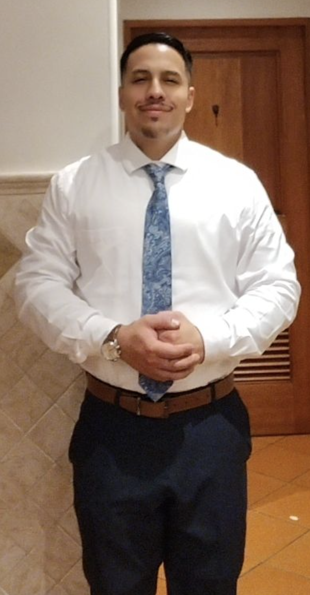

Dignity & Compassion
I believe in treating people with dignity, compassion, love, and respect. We are all people with flaws — imperfect — and we sin as humans.

I believe in treating people with dignity, compassion, love, and respect. We are all people with flaws — imperfect — and we sin as humans.
But I believe it is about moving forward, putting your best foot forward with a smile on your face, and trying to do right by helping other people when we can.
Creating a future for the next generations starts with our current actions. We can do great things, and we will do great things.
We are here to impact this world for the better, building day by day, second by millisecond.
I am a father and proud to be an American. I believe all people should chase the American Dream — dream big; no dream is unattainable in my eyes. I believe we can accomplish anything we put our minds to; if we think it, we can create it. I believe in treating people with dignity, compassion, love, and respect. We are all people with flaws — imperfect — and we sin as humans. But I believe it is about moving forward and putting your best foot forward with a smile on your face, and trying to do right by helping other people when we can. Creating a future for the next generations starts with our current actions. We can do great things, and we will do great things. We are here to impact this world for the better, building day by day, second by millisecond.
At 35 years old, I believe everything is about business. Whether it is family or the people you come in contact with, every relationship should have a structure that helps everyone involved get to the next level. That standard has to work both ways for all parties. I also believe we have to be strong role models for the next generation by teaching them about business, responsibility, and how to conduct themselves. We can start with our youth at a young age so they can grow into the best version of themselves, and it is our responsibility as the older generation to guide them in the right direction. That is why I believe everything should have a business standpoint that helps you evolve to the next level.